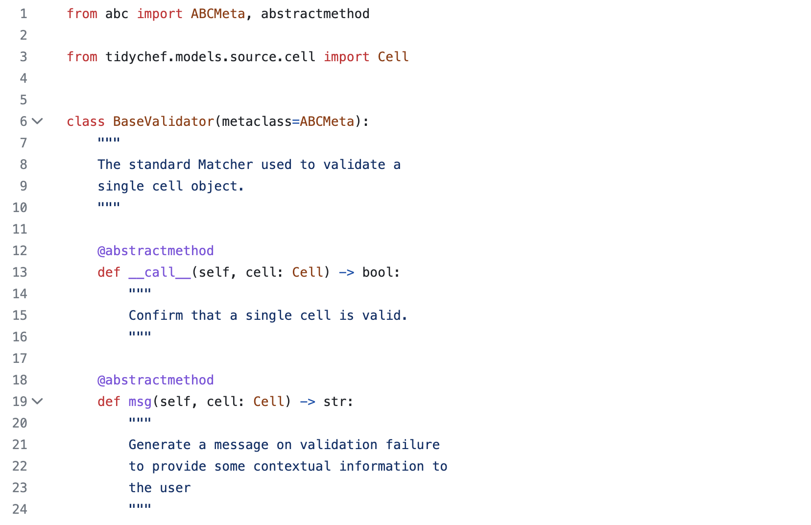
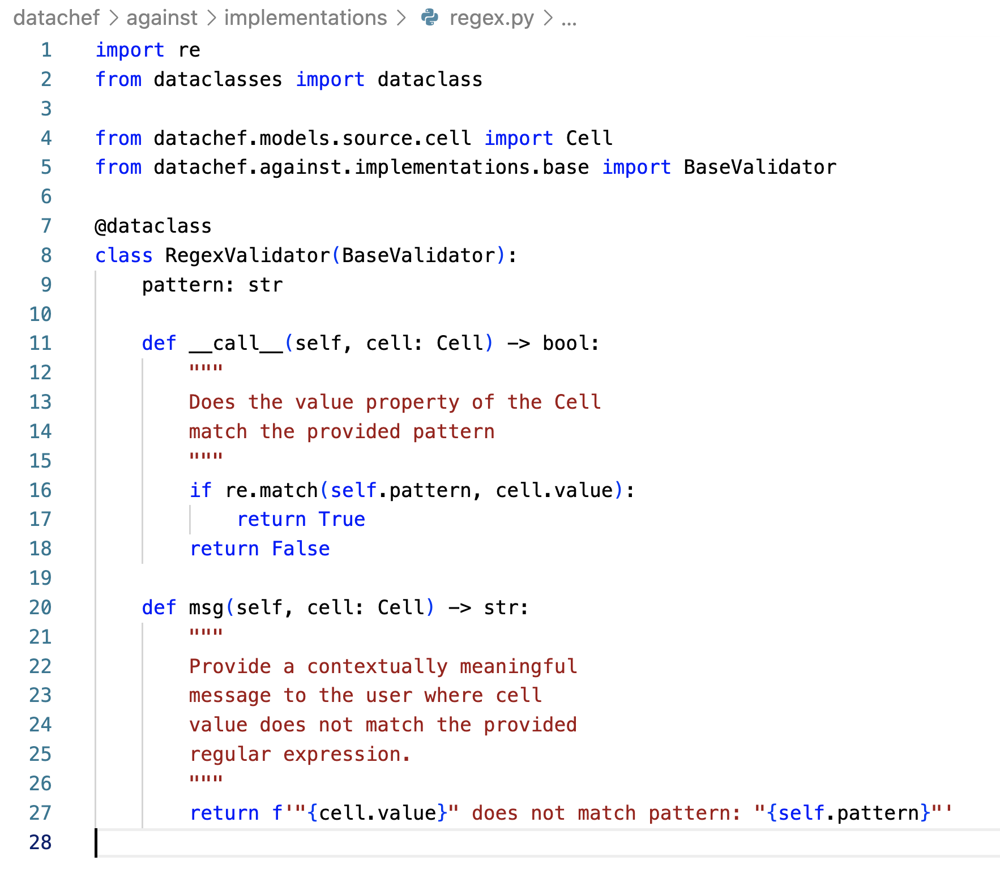

Against (Creating New Validators)#
You will have seen use the against module as part of selection validation and column validation.
This against module is really just a wrapper around some simple validation classes, this document explains what they are, how they work and how to make your own.
How it works#
A Validator in datachef is any class that inherits from datachef.against.implementation.base.BaseValidator.
As a convenience the code for for this class is shown below (don’t worry, it’s actually very straight forward).

So a validator does exactly two things:
Returns True or False when passed a Cell is passed to the class as an argument
Returns a str message explaining the issue when its
.msg()method is called with a Cell as an argument.
Note - The bits around abc and abstract classes are just programmer boiler plate, all they do is tell you if you forget to create one of the two listed methods (a useful thing!) otherwise you can safely ignore these bits as boiler plate.
Now lets see that in action in its simplest form. We’ll use the RegexValidator
Note - RegexValidator is the class that you’ve been using all along whenever you do against.regex(). The against module is effectively just syntactic sugar to keep the api nice an user friendly. Look here for how that works.
from datachef.models.source.cell import Cell
from datachef import against
# Create a simple Cell object for testing
fake_cell = Cell(x="0", y="0", value="foo")
# Create a validator using "foo" as a regex - this will be return True (foo matches foo)
validator = against.regex("foo")
print(f'Should be True: {validator(fake_cell)}')
# Create a validator using "bar" as a regex - this will be return False (foo does not match bar)
validator = against.regex("bar")
print(f'Should be False: {validator(fake_cell)}')
# Lastly lets call .msg() on our failed validation and print it
print(validator.msg(fake_cell))
Should be True: True
Should be False: False
"foo" does not match pattern: "bar"
Lastly, let’s have a look at the RegexValidator

Now look at the code we’ve populated the methods with to create our mighty regex implementation of a BaseValidator (all 4 lines of it)… not that complicated is it?
Create a new Validator#
For this example we’re going to create a validator that confirms that a selected cell holds a value that is considered numerical (you’ll notice this code is the code from the regex validator with a handful of small changes which we’ll list below).
from dataclasses import dataclass
from datachef.models.source.cell import Cell
from datachef.against.implementations.base import BaseValidator
@dataclass
class NumericValidator(BaseValidator):
def __call__(self, cell: Cell) -> bool:
"""
Is the value property of the Cell numeric
"""
return cell.value.isnumeric()
def msg(self, cell: Cell) -> str:
"""
Provide a contextually meaningful
message to the user where cell
value is not numeric
"""
return f'"{cell.value}" is not numeric'
Changes we made
We’ve removed the
patternvariables since our validator doesn’t need arguments.We’ve used the
isnumericmethod (that all python strings have) to return True or False when the class gets called (via__call__).We’ve updated the message.
We’ve updated the docstrings and name of the class.
We’ve removed
import resince we’re not using it.
Now lets try it:
from datachef.models.source.cell import Cell
# Create a simple Cell object for testing
# Note the value here is numeric!
valid_cell = Cell(x="0", y="0", value="1")
# Try it out - this will be return True (1 is numeric)
validator = NumericValidator()
print(f'Should be True: {validator(valid_cell)}')
# Now lets try a Cell with a non numeric value
invalid_cell = Cell(x="0", y="0", value="foo")
print(f'Should be False: {validator(invalid_cell)}')
# Lastly lets call .msg() on our failed validation and print it
print(validator.msg(fake_cell))
Should be True: True
Should be False: False
"foo" is not numeric
Putting it all together#
Now lets see our new validator is action using the <selectable>.validate() method.
You could equally use this new validator with Columns(validate=) (exactly the same validator class is used in both instances).
Source Data#
The data source we’re using for these examples is shown below:
The full data source can be viewed here.
from datachef import acquire, preview
from datachef.selection import CsvSelectable
table: CsvSelectable = acquire.csv.http("https://raw.githubusercontent.com/mikeAdamss/datachef/main/tests/fixtures/csv/bands-wide.csv")
preview(table)
Unnamed Table
| A | B | C | D | E | F | G | H | I | J | K | |
| 1 | |||||||||||
| 2 | Houses | Cars | Boats | Houses | Cars | Boats | |||||
| 3 | Beatles | Rolling Stones | |||||||||
| 4 | John | 1 | 5 | 9 | Keith | 2 | 6 | 10 | |||
| 5 | Paul | 2 | 6 | 10 | Mick | 3 | 7 | 11 | |||
| 6 | George | 2 | 7 | 11 | Charlie | 3 | 8 | 12 | |||
| 7 | Ringo | 4 | 8 | 12 | Ronnie | 5 | 9 | 13 | |||
| 8 |
For this example we’re going to select all non blank values from columns C & D and run our new validator against them.
from datachef import acquire, preview
from datachef.selection import CsvSelectable
table: CsvSelectable = acquire.csv.http("https://raw.githubusercontent.com/mikeAdamss/datachef/main/tests/fixtures/csv/bands-wide.csv")
# Select them
selection = (table.excel_ref('C') | table.excel_ref('D')).is_not_blank()
# Preview the selection - PRIOR to validation
# note - for the sake of this example, you'd just do it in one typically
preview(selection)
# Noe validate it
numeric_validator = NumericValidator()
selection.validate(numeric_validator)
| Unnamed Selection: 0 |
Unnamed Table
| A | B | C | D | E | F | G | H | I | J | K | |
| 1 | |||||||||||
| 2 | Houses | Cars | Boats | Houses | Cars | Boats | |||||
| 3 | Beatles | Rolling Stones | |||||||||
| 4 | John | 1 | 5 | 9 | Keith | 2 | 6 | 10 | |||
| 5 | Paul | 2 | 6 | 10 | Mick | 3 | 7 | 11 | |||
| 6 | George | 2 | 7 | 11 | Charlie | 3 | 8 | 12 | |||
| 7 | Ringo | 4 | 8 | 12 | Ronnie | 5 | 9 | 13 | |||
| 8 |
---------------------------------------------------------------------------
CellValidationError Traceback (most recent call last)
/var/folders/3q/wpcx20553xv0hpsjgtq_zl_m0000gp/T/ipykernel_7060/4217185943.py in <module>
13 # Noe validate it
14 numeric_validator = NumericValidator()
---> 15 selection.validate(numeric_validator)
~/.pyenv/versions/3.7.13/lib/python3.7/site-packages/datachef/selection/selectable.py in validate(self, validator, raise_first_error)
531 encountered:
532 {linesep.join(validation_errors)}
--> 533 ''')
534
535 return self
CellValidationError:
When making selection "No label provided" from table:
"Unnamed Table" the following validation issues were
encountered:
"Houses" is not numeric
"Cars" is not numeric
Further steps#
At this point we’re approaching the point where a lesson in datachef becomes a lesson in python (so this is probably more one for the programmers) but consider the following.
Validators are simple python classes and can be freely constructed.
For any given data pipeline project you will always have a source of truth.
Validators can give you contextual information during the transformation process regarding exactly what and where the issue is.
So in terms of possibilities…
If you’re desired output uses codelists - create a validator to compare your extracted values to said codelists.
If you’re desired output has schemas - create a validator to compare your extracted values to said schema.
If you’re desired output ends up on a restful api - create a validator to pull the valid values off said api and validate your extracted values against them.
etc etc
You can always of course just validate your extracted data after its written to disk (a completely sensible thing to do) via <whatever your tool of choice is>, but there is an argument for validating early and often (and while you have context for exactly what in the extraction process has caused the issue).
As always it will depend on your own use case and requirements.